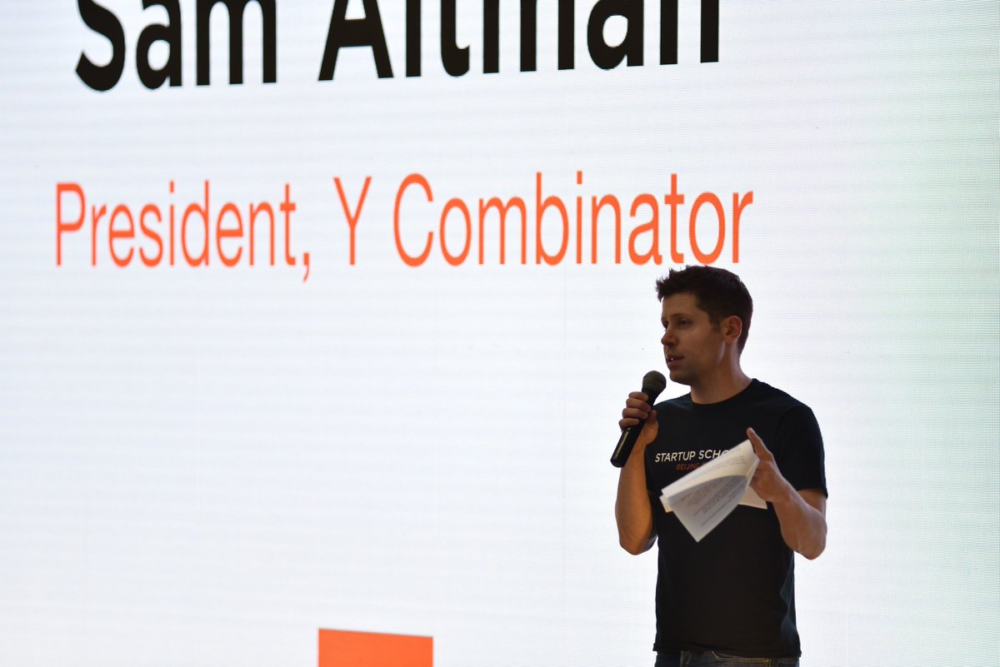

说个不太冷的往事：如今炙手可热的Ai公司Anthropic创始人之一达里奥·阿莫迪（Dario Amodei）曾在2014年加入百度研究院（Baidu Research），在吴恩达指导下工作约一年，参与AI和语音识别研究，这是他在AI工业界的生涯起点。
当时达里奥·阿莫迪在斯坦福大学医学院进行博士后研究，从医学转投AI，得益于他在斯坦福大学本科期间的物理学科教育。
在百度的这段经历让他接触到了中文和多语种环境下的AI应用，这在后来Anthropic做大规模语言模型的多样性和安全性研究时也有一定的间接影响。
他离开百度后转投谷歌和OpenAI，后创立Anthropic，但这段百度经历被视为其AI规模化思考（如Scaling Laws）的开端。
当时达里奥·阿莫迪在斯坦福大学医学院进行博士后研究，从医学转投AI，得益于他在斯坦福大学本科期间的物理学科教育。
在百度的这段经历让他接触到了中文和多语种环境下的AI应用，这在后来Anthropic做大规模语言模型的多样性和安全性研究时也有一定的间接影响。
他离开百度后转投谷歌和OpenAI，后创立Anthropic，但这段百度经历被视为其AI规模化思考（如Scaling Laws）的开端。
